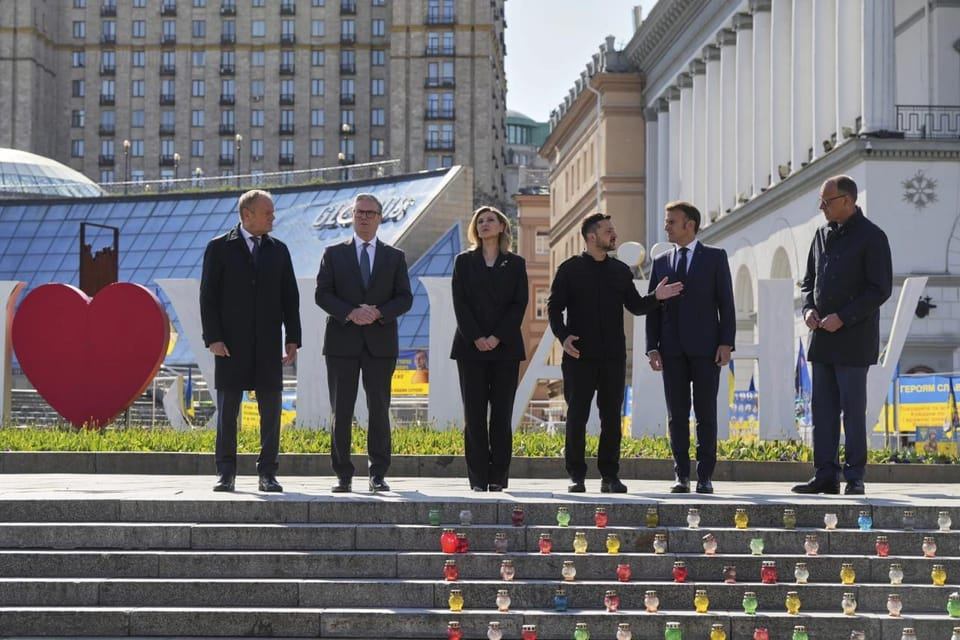

世界苦茶05月11日新闻 | 35条 | 一天时间印巴俄乌均停火

一天时间印巴俄乌均停火 | 中国4月CPI与PPI继续下跌 | 习近平首次与缅甸军政府首脑会面 | 新教皇谴责俄罗斯对乌克兰入侵
苦茶数据
美元兑人民币：7.24（昨日7.24，前日7.24）
美元兑日元：144.98（昨日145.59，前日143.56）
上证指数：休市（昨日3342，前日3342）
标普500指数：休市（昨日5659，前日5663）
比特币：1034776（昨日103432，前日102608）
布伦特原油：63.91（昨日63.20，前日61.43）
印巴冲突
• 印巴停火后再交火 ：印度和巴基斯坦相互指责对方违反停火协议。在停火数小时后，此前处于战斗中心的查谟和克什米尔地区再次发生炮击和无人机袭击。印度外交部指责巴基斯坦违反停火协议，呼吁巴基斯坦采取适当措施解决侵犯行为，并指示印度武装部队“有力处理”此类事件。巴基斯坦外交部指责印度违反停火协议，称巴基斯坦致力于停火，巴武装部队正以负责任和克制的方式处理局势。巴外交部呼吁地面部队保持克制，呼吁在停火期间的任何问题应通过适当级别的沟通解决。 （翻評：明天應該就沒有這個部分了。）
中国新闻
• 美公民指中国检测侵入性强 ：美国媒体称，有美国公民在入境中国时被要求接受“侵入性医学检测”。美国驻华大使馆表示已接到相关报告，正在调查中。据彭博社报道，一名美国公民称，他乘坐的航班于5月2日抵达上海浦东国际机场。落地后，所有持外国护照的乘客被集中带到一个区域，中国检疫人员用拭子反复刮擦他们的舌头。曾是遗传学研究员的这名美国公民表示，这架来自英国的航班上的乘客，并未被告知为何要接受拭子检测取样，也不清楚这些样本将被用于何种用途。
• 日本称中国为最大挑战 ：日本媒体披露，日本政府2025年版《防卫白皮书》草案提出， 中国的军事动向是前所未有的最大战略挑战，并指中国和俄罗斯加强军事合作是日本安保的重大关切事项。共同社引述多名消息人士称，日本政府2025年版《防卫白皮书》的草案在星期五曝光。针对中国的军事动向，草案明确这是“前所未有的最大战略挑战”。草案提及北京去年在台湾周边的军事演习等活动日益频繁，指中国大陆正在急速加强核、导弹和海上、航空战力，并对日本周边中方与俄军的联合飞行和联合航行表示关切。
• 前大使称教宗了解台陆差异 ：台湾前驻教廷大使李世明说，罗马天主教新教宗良十四世很清楚“民主台湾和共产中国的区别”，相信他会务实处理中国大陆问题。据TVBS新闻网和民视新闻报道，卸任退休的李世明星期六早上6时飞抵台湾桃园机场。他受访时说，新教宗很清楚“民主台湾和共产中国的区别”，相信未来台梵之间的关系将会有更好的发展。他说：“我印象最深刻的是，他对于民主台湾以及共产中国，有很深刻的了解。我们也知道在过去十几年里面，教宗方济各对中国共产党充满幻想。我相信这位教宗会更务实处理中国问题。”
• 重庆大学生论文风波 ：重庆大学一名大四学生因发表14篇受科学引文索引认可的论文，引起中国舆论质疑。官方通报指她的父亲、重庆大学研究生院副院长存在学术不端行为，已被免去职务。综合极目新闻和《南方都市报》报道，重庆共青团星期三发文称，重庆大学大四学生刘培乔获得中国国家奖学金，文章透露该学生发表SCI论文14篇，获国家发明专利授权三项，引发中国网络热议。报道称，刘培乔最早参与的发明专利申请于2016年，当时她还是一名年仅13岁的初中生。她所署名的论文和专利均非第一作者，多为第三和第四作者，合作者中频繁出现重庆大学研究生院副院长、化工学院教授刘作华的名字。
• 中美官员瑞士再会谈 ：中美经贸高层会谈在瑞士日内瓦开始举行。据新华社报道，当地时间星期六早上，中共中央政治局委员、国务院副总理何立峰作为中美经贸中方牵头人，当天与美方牵头人、美国财长贝森特举行会谈。
• 习近平与敏昂莱首次会面 ：中国国家主席习近平与缅甸军政府领导人敏昂莱会面时表示，支持缅甸稳妥推进国内政治议程。这是敏昂莱发动军事政变以来两人首次会面。据新华社报道，习近平星期五下午在莫斯科出席纪念苏联伟大卫国战争胜利80周年庆典期间，与敏昂莱会面。习近平说，中缅两国共同倡导的和平共处五项原则和万隆精神历久弥坚，时代价值不断凸显。中国将秉持睦邻、安邻、富邻、亲诚惠容、命运与共的理念方针，同缅方深化命运共同体建设，高质量共建“一带一路”。
• 巴西总统将访华 ：中国外交部发言人宣布，应中国国家主席习近平邀请，巴西总统卢拉将于星期六至下星期三对中国进行国事访问。中国外交部星期六在官网正式发布卢拉访华的消息。卢拉访华前夕，巴西农业部于当地时间星期四证实，中国已解除此前因植物检疫问题对五家巴西大豆出口企业的限制。
亚太印太新闻
• 蔡英文启程访欧 ：台湾前总统蔡英文启程赴欧出访立陶宛及丹麦，她表示，希望此行传达台湾会继续与民主盟友合作，共同确保区域安全稳定，也向国际分享台湾民众对自由、民主的坚持。蔡英文星期五晚启程前往欧洲，她在脸书发文说，将出访立陶宛与丹麦，让欧洲的好朋友能对台湾有更深的认识，也让台欧关系更加紧密。访立陶宛期间除了拜会当地好友，也将于维尔纽斯大学发表演说，并与立陶宛前总统格里包斯凯特对谈。蔡英文还说，她也将应民主联盟基金会邀请，前往丹麦哥本哈根出席第八届哥本哈根民主峰会并发表演说。
• 台湾将致信世卫大会 ：台湾至今仍未收到世界卫生大会的与会邀请，台湾卫福部长邱泰源说，决定向大会递交“半抗议半呼吁”的信函，呼吁大会让台湾与各国进行医卫交流。综合台湾《联合报》《中国时报》报道，第78届世界卫生大会将于5月19日起在瑞士日内瓦登场，连续九年未收到邀请函的台湾将按照惯例，组成行动团于5月16日前往日内瓦，但今年的规模比往年少了三分之一。邱泰源星期五说，世卫大会行动团将按原定规划，于5月16日晚间出发前往日内瓦，参与一系列活动，如与理念相近国家进行会谈等。
• 国民党将向欧解释争议 ：台湾在野党国民党副主席夏立言即将启程访问欧洲，他表示此行将向欧洲方面尽力说明党主席朱立伦有关纳粹言论的原始用意。朱立伦近期多次以纳粹、法西斯、希特勒等字眼形容总统赖清德打压在野党的行为，引发德国、以色列驻台机构公开批评，欧盟、英国、法国、荷兰、比利时、瑞典等多国驻台机构也纷纷转发相关声明表达谴责。综合台湾《联合报》和知新闻报道，国民党星期六宣布，夏立言将于星期天晚启程，代表朱立伦出席“哥本哈根民主高峰会”与“国际民主联盟论坛”两场民主会议，并计划前往英国，与当地政界、侨界及学术界人士会面。
• 李在明登记参选总统 ：韩国最大在野党共同民主党总统候选人李在明，星期六正式登记成为第21届总统选举候选人。新华社报道，共同民主党方面的消息，共同民主党选举对策委员会总务本部长等人，星期六来到中央选举管理委员会，完成了李在明的总统候选人登记程序。4月27日，李在明以89.77%的得票率正式当选共同民主党总统候选人。
科技新闻
• 英伟达CEO下周访台 ：美国晶片巨头英伟达首席执行官黄仁勋据报将于下周访台，宣布台湾总部的选址。综合台湾ETtoday新闻云和《中国时报》报道，黄仁勋预计将于5月12日抵台，并在台湾停留超过一周。黄仁勋此行将出席5月19日举行的COMPUTEX 2025，并发表主题演讲。他也计划拜访多家台湾重要供应链企业，并宴请多位科技业重量级人士。不过，英伟达方面目前尚未证实这些行程。
• 谷歌就隐私案赔德州14亿 ：美国得州总检察长肯·帕克斯顿周五表示，谷歌同意向得州支付近14亿美元，以和解有关其侵犯该州居民数据隐私权的指控。肯·帕克斯顿于2022年起诉谷歌，指控其非法追踪和收集用户的私人数据。帕克斯顿表示：“在得州，大型科技公司不能凌驾于法律之上。谷歌多年来通过其产品和服务秘密追踪人们的行动轨迹、私人搜索记录，甚至包括他们的声纹和面部几何特征。我进行了反击并取得了胜利。”谷歌发言人表示，公司在此次和解中并未承认任何不当行为或责任。和解涉及与 Chrome 浏览器无痕模式相关的指控、与谷歌地图应用位置历史披露相关的问题以及与谷歌相册生物识别相关索赔。
• 马斯克诉OpenAI案将审判 ：在加州一名法官驳回了OpenAI试图撤销诉讼的请求后，马斯克对OpenAI及其CEO奥尔特曼的诉讼已向审判迈出了重要一步。马斯克是OpenAI联合创始人，他为该公司的创立捐赠了大量资金。他声称该组织持续推进从非营利机构向营利性实体转变的行为，构成了违约和欺诈。马斯克去年对OpenAI、奥尔特曼以及微软提起诉讼，并寻求初步禁令以阻止OpenAI的转型。一名法官三月份驳回了阻止该案的请求，但也同意通过搁置原诉讼中的部分指控来加快审判进程，目前审判定于2026年3月。加州北区法官罗杰斯周四驳回了该案的部分内容，但认为马斯克的律师提出的指控理由充分，案件可以继续审理。
• 苹果将增产巴西iPhone ：据巴西商业杂志Exame的最新报道，为了规避美国政府的进口关税，苹果公司已决定提高巴西的iPhone产量。目前，苹果已将大部分在美国销售的iPhone改在印度生产。该媒体曾在四月初时报道称，苹果正考虑在圣保罗州容迪亚伊的两家富士康工厂增加iPhone产量，以此应对特朗普政府的关税政策。但是，苹果当时否认称，并无增加巴西本地生产的计划，富士康容迪亚伊工厂旨在为巴西市场供货。不过该媒体如今再次报道称，作为规避美国关税策略的一部分，苹果已决定提高巴西iPhone产量。苹果在容迪亚伊本地组装iPhone已有十多年时间。目前，这些工厂生产iPhone 16、16 Plus和16e。
财经新闻
• 加州州长批关税政策 ：美国加利福尼亚州州长加文·纽森近日在社交媒体发布视频抨击联邦政府，并指美政府当前关税政策“可能令美国丧失全球最大经济体地位”。纽森日前向全美发布一则时长30秒的视频。视频中，他批评美政府关税政策导致美国进口受阻，直接影响普通人日常生活。“几个月后，人们会缺学校书包、缺圣诞玩具。关税将令美国家庭雪上加霜。”新华社引述纽森说，作为美国经济实力最强的州，加州在全球经济中占有重要地位，这正是因为加州致力于“减少贸易壁垒和为美国消费者提供优质服务”，但当前关税政策正在损害这一切，导致物价上涨、港口停滞。
• 美对英钢关税设条件 ：根据英国与美国最新达成的一项协议，只有在英国满足有关部分钢厂所有权的要求后，美国才会削减对英国钢材关税，这进一步引发外界对中国敬业集团持有英国钢铁公司股权的担忧。星期四宣布的协议文本显示，美方将在英国满足关于供应链安全和“相关生产设施所有权性质”的条件后，向英国钢铁公司提供可享受较低关税的进口配额。
• 马云重现鼓励创业 ：中国科技巨头阿里巴巴创始人马云星期五晚现身阿里总部“创业公寓”湖畔小屋，鼓励员工坚持创业精神，持续创新。综合澎湃新闻、杭州网报道，星期六是第21个“阿里日”，马云星期五晚身着白衣现身阿里总部“创业公寓”湖畔小屋，阿里巴巴集团CEO吴泳铭等陪同参观。湖畔小屋是刚刚在阿里全球总部亮相的一座复刻版“创业公寓”，它等比例复刻了1999年马云和创始团队开启创业的湖畔花园16幢1单元202室，阿里员工称它为“湖畔小屋”。目前已成为阿里总部和杭州未来科技城最热打卡地之一。
• 雷军称创办以来最难时刻 ：中国科技企业小米创始人雷军称，过去一个多月是他创建小米以来，最艰难的时期。雷军在星期六清晨6时通过微博发文，并晒出自己在健身房打卡的照片。他写道：“过去一个多月，是我创办小米以来最艰难的一段时间，情绪比较低落，取消了一些会议安排和出差计划，也暂停了一段在社交媒体上的互动。”他补充说，过去几年自己一直处于高强度工作状态，这段时间反而有机会沉淀思考，并有所收获。 （翻評：不出來鞠躬道歉，還在這兒玩深沉。）
• 宁德时代计划港股IPO ：中国电动车电池龙头宁德时代计划在香港上市，目标筹资至少40亿美元，有望成为今年全球规模最大的首次公开募股。彭博社星期五引述知情人士消息称，若此次交易扩大并启用超额配售选择权，募资金额可能增至53亿美元。该人士表示，宁德时代很可能行使这个选择权。预计宁德时代在香港的定价上限，将参考该公司星期四在深圳市场的收盘价——244.57元人民币。宁德时代已启动投资者意向评估，据报最快在本月内完成上市。
• 中国4月CPI同比降0.1%，PPI降2.7% ：中国4月份全国居民消费价格同比连续三个月下滑，跌幅与上个月持平，显示通缩阴影犹在。中国国家统计局星期六公布，4月份的中国全国CPI同比下降0.1%，环比上涨0.1%。3月份的CPI同比下降0.1%，环比下降0.4%。核心CPI环比由平转涨，上涨0.2%；同比上涨0.5%。数据显示，食品价格同比下降0.2%，非食品价格持平；消费品价格同比下降0.3%，服务价格上涨0.3%。2025年4月份，全国工业生产者出厂价格PPI同比下降2.7%，环比下降0.4%；工业生产者购进价格同比下降2.7%，环比下降0.6%。1—4月平均，工业生产者出厂价格和购进价格比上年同期均下降2.4%。
• 特朗普拟永久征关税 ：美国总统特朗普星期五说，他将“永远”对贸易伙伴征收至少10%的基准关税，但他随即又说，“可能会有例外”。彭博社指出，特朗普的这一表态凸显出判断美国在数十个贸易谈判中的立场是很困难的。特朗普当天在白宫对记者说：“你必须永远保留基准关税。”
• 中国海外投资大增28% ：中国第一季度新增海外资产同比暴增28%，显示在中美贸易战的压力下，中国企业正加速在海外扩张布局。中国国家外汇管理局星期五公布的初步统计数据显示，中国第一季度直接投资资产约480亿美元，同比增长28%。彭博社分析，这份数据反映出在美国关税战初显压力、中国国内竞争加剧以及贸易封锁风险不断上升的背景下，中国企业正加快海外扩张步伐，试图通过在海外创造就业和经济增长点，缓解外部紧张局势。
俄乌战争
• 乌克兰宣布30天停火 ：乌克兰和欧洲领导人星期六同意，于星期一开始无条件停火30天，这项提议获得美国总统特朗普支持。他们同时对俄罗斯总统普京发出警告，指莫斯科若不遵守这项安排，将面临大规模的新制裁。英国首相斯塔默、法国总统马克龙、德国总理默茨和波兰总理图斯克星期六在基辅，与乌克兰总统泽连斯基一道，和其他欧洲领导人举行线上会议，讨论一项由美国和欧洲提出的30天停火提议。在线上会议结束后，泽连斯基和欧洲四国领导人再通过电话，与特朗普进行了取得积极成果的通话。
• 普京提议15日重启谈判 ：俄罗斯总统普京5月11日提议于5月15日在土耳其伊斯坦布尔“无条件”重启与乌克兰的直接谈判。普京还指责乌克兰多次违反暂停对能源设施袭击的协议、复活节停战协议等，指出俄罗斯一再采取措施与乌克兰对话，从未拒绝。普京表示，此次邀请在伊斯坦布尔进行严肃会谈的目的是为了消除冲突的根本原因，不排除在谈判期间达成停火协议。他计划12日与土耳其总统埃尔多安沟通。
• 乌欧美提议乌俄30天停火 ：乌克兰和法国、英国、德国、波兰的领导人5月10日提议自5月12日起无条件停火30天，停火范围包括海陆空。他们表示，该提议得到了美国总统特朗普的支持，如果俄罗斯总统普京不遵守，将加大对包括能源和银行业在内的制裁力度。欧洲领导人当天表示，建立乌克兰的军事能力将是对抗俄罗斯的关键威慑。这将需要向乌克兰提供大量武器以阻止未来的袭击。法国总统马克龙表示，也可以部署一支由外军组成的部队，作为额外的保证措施。目前欧洲在乌克兰驻军的细节仍在微调。当天亦是俄罗斯宣布在纪念卫国战争胜利期间单方面停火的最后一天。俄罗斯国防部称，俄军遵守了停火协议，但报复了乌军的“违反”行为。乌克兰方面称，俄军一再违反停火进行袭击，停火是一场闹剧。
• 俄探测器坠入印度洋 ：俄罗斯国家航天集团宣布，1972年未能到达金星的前苏联探测器坠落在印度洋。通报称：“1972年发射的‘宇宙-482’号探测器不复存在，脱离轨道坠入印度洋。”探测器从轨道上坠落的过程受到了近地空间危险情况自动预警系统的监控。根据俄罗斯国家航天集团专家的计算，探测器于莫斯科时间5月10日9时24分在中安达曼岛以西 560公里处进入大气对流层，坠入到雅加达以西的印度洋。探测器于1972年向金星发射，但由于末级运行异常，运载火箭未能达到行星际轨道，而是停留在大椭圆轨道上。随着时间的推移，由于与高层大气的摩擦，轨道高度开始下降。
• 教皇利奥十四世谴责俄罗斯对乌克兰的“帝国主义”入侵： 新任教皇利奥十四世在5月9日的一次采访中公开反对俄罗斯继续对乌克兰发动战争。在接受秘鲁新闻媒体《周报》采访时，利奥十四世谴责了俄罗斯对乌克兰的战争，称其为“一场真正的入侵，本质上是帝国主义，俄罗斯试图出于权力目的征服领土”。利奥十四世教皇于本周早些时候被任命，此前教皇方济各于4月21日去世，享年88岁。5月7日，枢机主教们在梵蒂冈正式开启了历史性的秘密会议，选举下一任天主教会领袖。新任教皇明确指出俄罗斯在乌克兰的帝国主义野心，其言论与其前任在乌克兰问题上的立场截然不同。尽管教皇方济各被广泛视为一位以同情和人性领导教会的改革者，但他在乌克兰留下的遗产却更加复杂。 （翻評：在這方面比方濟各更加清楚。）
• 美国批准从德国向乌克兰转让200多枚导弹： 据《纽约时报》报道，美国已批准从德国向乌克兰转让导弹。涉及导弹数量超过200枚。周五，一位美国国会官员宣布，美国已批准德国向乌克兰转让125枚远程火箭弹和100枚爱国者防空导弹。《纽约时报》补充道：“这些急需的武器在美国制造，未经美国政府批准，不得出口——即使其他国家拥有它们。”乌克兰此前曾收到用于“高机动性火箭炮”和其他火炮系统的导弹。然而，据《纽约时报》消息人士称，此次交付的导弹包含125枚远程导弹。
其他新闻
• 伊朗美将第四轮间接会谈 ：伊朗同意星期天举行伊朗与美国的第四轮间接会谈。新华社报道，伊朗外交部长阿拉格奇星期五受访时说，斡旋谈判的阿曼已询问伊朗对11日作为新一轮谈判日期的看法，“我们表示同意”。他还说，显然阿曼也询问过美国，“就目前而言，谈判定于11日举行。关于谈判开始时间，我们正在等待阿曼方面的协调”。阿拉格奇表示，谈判正在向前推进，取得的进展越多，就需要进行更多的磋商和审查，代表团需要更多的时间来审查提出的问题。
• 西班牙氯气泄漏封城 ：西班牙巴塞罗那附近约16万人奉政府命令待在室内，此前一处工业建筑发生火灾，释放出大面积有毒氯气。巴塞罗那消防部门星期六说，大火发生在巴塞罗那南部沿海城市维拉诺瓦—伊拉赫尔特鲁，烧毁了一座存放泳池清洁产品的建筑物。法新社引述民防部门在社交媒体上发布的公告称：“如果您身处受影响区域，请勿离开您的住所或工作场所。”
• 墨总统起诉谷歌更名海湾 ：墨西哥总统辛鲍姆说，墨西哥政府已对美国谷歌公司提起法律诉讼，指控谷歌在美国用户的地图服务中将“墨西哥湾”更名为“美国湾”。新华社报道，辛鲍姆在星期五的例行记者会上表示，墨方已就谷歌更名行为提出正式起诉。但她未透露具体提交的法院机构和时间点。美国总统特朗普今年1月签署行政令，将“墨西哥湾”更名为“美国湾”。5月8日，美国众议院通过一项法案，要求联邦机构将所有地图和文件中的“墨西哥湾”更名为“美国湾”。
• 美拟纳格陵兰入势力范围 ：两名美国官员和另一名知情人士透露，特朗普政府正在讨论利用美国与几个太平洋岛国保持密切联系的一种协定，将格陵兰岛纳入美国的势力范围。路透社报道，根据美国官员正在讨论的一项计划，特朗普政府将向格陵兰岛领导人提议，让格陵兰岛与美国签署所谓的《自由联系协定》。至今，美国仅与密克罗尼西亚联邦、马沙尔群岛和帕劳三个太平洋岛国签署了《自由联系协定》，协定具体细节也因签署国不同而各有差异。
• 美国政府效率部推出自动化裁员软件： 两位知情人士透露，美国联邦人力资源部准备推出一款软件，以加快美国政府的裁员速度。四位消息人士称，在马斯克的政府效率部的指导下，美国人事管理办公室的软件开发人员在过去几个月里创建了一个更加好用的网络版本，比目前劳动密集型的人工流程更快地提供裁员目标。该软件是国防部数十年前开发的AutoRIF程序的升级版，该程序近年来很少使用。AutoRIF的名字本意就是 “自动裁员”，修改后的版本被赋予了一个听起来更温和的名字 “劳动力重塑工具”。随着软件改造的完成，OPM将在未来几周内进行演示、用户测试并开始增加新用户。